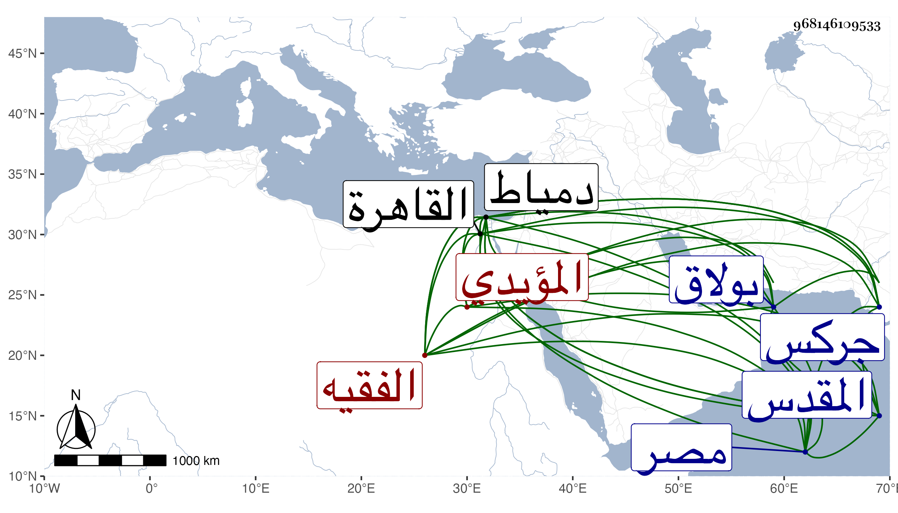

0902Sakhawi.DawLamic.ITO20230111-ara1.EIS1600.968146109533
Biography ID: 968146109533
1076
يشبك من سلمان شاه المؤيدي الفقيه . ولد على رأس القرن وأحضر من بلاد جركس في سنة ثمانمائة فتنزل في الطباق وصار من خاصكية أستاذه ثم ترقى إلى أن تزوج ابنة آسية وتكلم في أوقافه وصار في أيام الأشرف برسباي رأس نوبة الجمدارية إلى أن أنعم عليه الظاهر بأمرة عشرة بعد وفاة تمر النوروزي ثم زيد عدة قرى إلى أن بقي من أمراء الطبلخاناة وكان من جملة ما أنعم عليه به شبين القصر ثم لما استقدم ولدا لابن أخيه من بلاده واشتراه طلع به إليه لينزله في المماليك الكتابية فرقاه عن ذلك إكراما لعمه وقرر له ألفين والعليق وتوابعهما بل قرر لولده يحيى سبط المؤيد مثله وسافر في أيامه غير مرة لغزو الفرنج وظهرت كفاءته وفروسيته وكذا سافر بعده للجون غير مرة وفي عدة تجاريد وغيرها واختص بالجمالي ناظر الخاص وانتفع الناس بسفارته عنده ، ولا زال على إمرته دولة بعد أخرى إلى أن استقر خجداشه الظاهر خشقدم فقدمه في سنة ست وستين ثم عمله دوادارا كبيرا بعد قتل جانبك الجداوي فكانت ولايته من التنفيسات وباشرها حتى كانت الوقعة التي خلع فيها الظاهر بلباي وتسلطن تمربغا واجتمع عنده كثير من المقدمين وغيرهم من الكبار والصغار بقصد القيام بنصر بلباي وساعدهم غيرهم ووقع الحرب ولم ينحز كهو لقتال بل صار يسوف بطالبه منه وقتا بعد وقت لعدم ميله إلى الشر وحسبان العواقب الأخروية وإلا فلو وافقهم على ما راموه منه لبلغوا قصدهم ثم لم يلبث أن تسحب فلم يعرف أين توجه ونهب بيته ، واستقر في المملكة تمربغا فقرر عوضه في الدوادارية خير بك ثم ظهر صاحب الترجمة بعد أيام في بيت الأتابك قايتباي فشفع فيه ليتوجه لبيت المقدس بطالا ثم حول إلى دمياط وأقام بها إلى أن أنعم عليه الأشرف قايتباي بالعود إلى الديار المصرية بعد موت ولده فأقام بها بطالا إلى أن مات بعد توعكه مدة طويلة وتحوله بسببه لبيت منصور بن صفي المجاور لربع قانم من بولاق في يوم السبت سادس عشرى ربيع الأول سنة ثمان وسبعين وحمل في محفة وهو ميت لبيت أزدمر المسرطن زوج ابنته بقناطر السباع وجهز وصلى عليه في سبيل المؤمني بحضرة السلطان والأربعة وجمع جم ثم دفن بتربة تجاه صهريج منجك فيها قبور أولاده ، وكان قد لازم الاشتغال بالفقه والقراآت والحديث فكان ممن يتردد إليه أياما في الأسبوع البدر بن عبيد الله بحيث قرأ عليه الهداية وغيرها والشهاب الحلبي الضرير المقرئ بحيث قرأ عليه عدة قراآت نظرا في المصحف وكذا ابن أسد وغيره من القراء وكاتبه فقرأ على بعض البخاري وغير ذلك بل وسمع من لفظي قديما القول البديع من تصانيفي بتمامه واغتبط به ، ثم بعد عوده من دمياط في أيام بطالته سمع من لفظي أيضا ارتياح الأكباد وكذا اليسير من القول التام في فضل الرمي بالسهام وغيرها وكان يقول لا أزال أقرأ عليك حتى ألقى الله وأنا طالب علم ، بل قد لقي قديما بالقاهرة وبيت المقدس الشمس بن الديري وسمع كثيرا من مجالسه ثم حضر عند والده القاضي سعد الدين وحصل تكملته لشرح الهداية وعند شيخنا والمحب بن نصر الله في آخرين ، وحج غير مرة أولها في سنة خمس وعشرين وآخرها وهو في الدوادارية صحبة ولده أمير الركب الأول ، وكان أميرا حسنا يفهم كثيرا من مسائل العلم ويستحضر أشياء مع الدين والتواضع المفرط والهضم لنفسه بحيث يمنع من يطريه أو يبالغ في مدحه والرغبة في لقاء العلماء والفضلاء والمذاكرة معهم والتنويه بذكرهم وحسن الإعتقاد والتصدق باليسير والقانون المتوسط بل دون ذلك في ملبسه ومركبه وسائر أحواله والهمة مع من يقصده بحيث يفضي به إلى التعصب الذي ربما ينقمه عليه الأخيار وما أظن به تعمد القيام في باطل ، هذا كله مع تقدمه في الفروسية والرماية وكونه ممن أحكم الأمور بالتجارب . وبالجملة فقد كان ينطوي على محاسن جمة وما أعرف خلف في أبناء جنسه مثله رحمه الله وإيانا .
